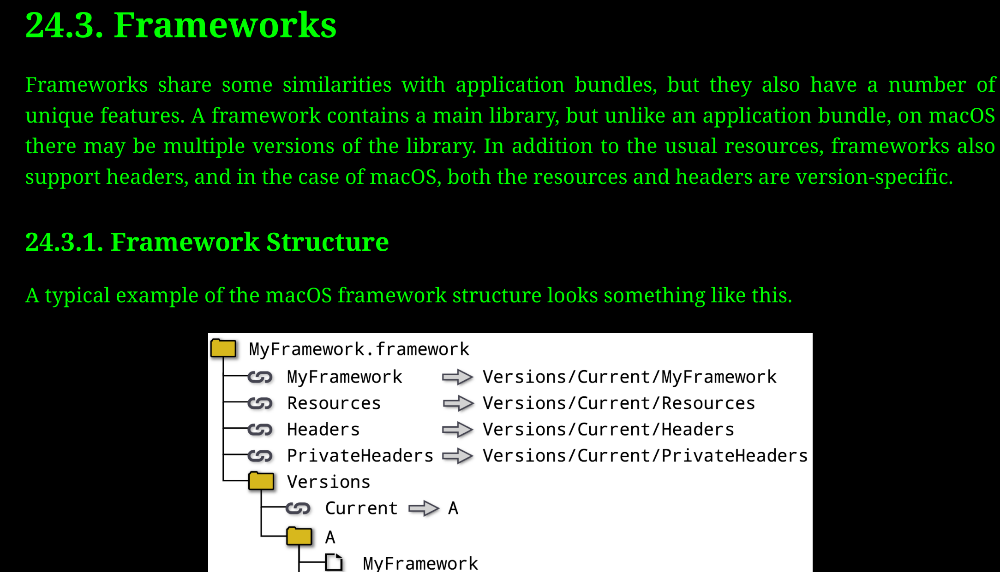

|
AnimationEngineCPP 0.0.1
|
keyword: static, dynamic, framework
Table of Contents
| Aspect | Dynamic Library | Static Library |
|---|---|---|
| Description | Libraries that are loaded at runtime. | Libraries that are linked at compile time. |
| Extension | Typically .dll (Windows), .so (Linux), .dylib (macOS). | Typically .lib (Windows), .a (Unix/Linux/macOS). |
| Linking Type | Dynamic Linking | Static Linking |
| Size of Executable | Generally smaller, as the actual library code resides in the shared library. | Larger, as the library code is incorporated into the final executable. |
| Memory Footprint | Multiple programs can share a single instance in memory. | Each program has its own copy of the library functions in memory. |
| Loading Time | May increase, as linking is done at runtime. | Typically faster, as all linking is done at compile time. |
| Versioning | Can update without recompiling dependent applications (if ABI is preserved). | Applications must be recompiled if the library is updated. |
| Portability | Executable needs the correct version of the library present at runtime. | No external dependencies are required at runtime. |
| Performance | Slight overhead due to dynamic linking, though often negligible. | Might be slightly faster due to early binding. |
| Compilation Time | Might be faster as each change to the library doesn't require recompiling dependent applications. | Could be slower, especially if the library is large and the application needs to be relinked often. |
| Code Snippet (Compilation) | gcc -shared -o libmylib.so mylib.c (Linux) | ar rcs libmylib.a mylib.o (after compiling mylib.c to object file) |
| Code Snippet (Linking) | gcc -o myprog myprog.c -L/path/to/lib -lmylib (dynamic linking in Linux) | gcc -o myprog myprog.c -L/path/to/lib -lmylib (static linking) |
| Distribution | Must distribute the library and the executable. Also, may need to consider version compatibility. | Only the executable is distributed. |
| Use Case | When you expect updates to the library without wanting to recompile all dependent applications. Also, for plugins. | When you want a standalone executable without any external dependencies. |
Notes:
Static Linking and Dynamic Linking are two processes of collecting and combining multiple object files to form a single executable.
.lib extension and dynamic libraries use the .dll (Dynamic Link Library) extension. Executables typically have .exe extensions..a (archive) extension, and dynamic libraries have a .so (shared object) extension. Executables don't have a required extension in Linux..a extension, and dynamic libraries have a .dylib extension. Similar to Linux, executables don't have a required extension in macOS.These are just the usual conventions. It's possible to configure the build process to use other extensions or even no extensions at all.
let's create a simple "Hello World" library, both as a static library and a dynamic library.
hello.cpp)**To create a static library:
To create a dynamic/shared library:
main.cpp)**LD_LIBRARY_PATH:Comparison Table:
| Aspect | Static Library | Dynamic Library |
|---|---|---|
| Compilation | Two steps: Compile source to object file, then archive object files into a library. | Compile with -shared to directly create the shared library. |
| Linking | Library content is included in the final executable. | Only references to library functions are included. Library must be present at runtime. |
| Executable Size | Generally larger, as library content is embedded inside it. | Smaller. The actual library code is in the shared library, not the executable. |
| Distribution | Just the executable is required. | Both the executable and the shared library (.so, .dll) must be distributed. |
| Update Library | Need to relink and possibly recompile the executable. | Just replace the shared library file (if ABI compatibility is maintained). |
| Performance | No overhead of dynamic linking at runtime. | Minimal overhead due to dynamic linking, but generally negligible. |
| Flexibility | Not as flexible. Changing the library requires relinking the executable. | More flexible. Applications can use different versions or implementations of a library without needing to be recompiled or relinked. |
This table provides a general comparison between static and dynamic libraries in the context of a "Hello World" library. The exact benefits and trade-offs can vary based on the specific use-case and system setup.
macOS, read more about it in the CMake_for_Professional book.
A framework in the context of software development is a pre-written set of code or tools that provides generic functionality, upon which more specific software can be built. Frameworks enable developers to avoid "reinventing the wheel" by offering a structure and foundation for building applications.
Examples:
When using a framework in CMake, you typically use the find_package command to locate the framework, and then link against it.
Example (using a hypothetical "MyFramework"):
When you're compiling a program from the command line, you often have to specify where the compiler can find the framework headers and libraries. In macOS, frameworks are typically bundled in a .framework directory.
Example (using a hypothetical "MyFramework"):
-F specifies the path to search for frameworks and -framework is used to link against a specific framework.| Feature | Description | Common Practices |
|---|---|---|
| Structure and Organization | Provides a predefined structure for organizing code, resources, and other assets. | Stick to the structure provided by the framework for maintainability and better collaboration. |
| Reusable Components | Contains pre-built components or modules that can be reused across different parts of an application. | Use the built-in components before trying to build custom solutions; it saves time and ensures consistency. |
| Documentation and Community | Often comes with extensive documentation and a supportive community. | Regularly consult the official documentation; participate in community forums or discussion boards for support. |
| Extensibility | Allows developers to extend or override built-in functionality to cater to specific requirements. | Use extension points provided by the framework; avoid "hacking" or working against the framework's design. |
| Testing and Debugging | Often includes tools or modules for testing and debugging to ensure the application works correctly. | Regularly write tests as you develop; utilize built-in debugging tools for efficient troubleshooting. |
| Updates and Maintenance | Regularly receives updates, which might include new features, bug fixes, or performance improvements. | Stay updated with the latest version; however, always test the application thoroughly after updating the framework. |
| Framework | Description | Common Use Cases |
|---|---|---|
| Cocoa/Cocoa Touch | Apple's native object-oriented APIs for macOS/iOS UI development. | Building native macOS and iOS applications. |
| Core Foundation | C-based framework by Apple that provides data types and utilities for macOS and iOS. | Used for low-level operations in macOS and iOS development. |
| Metal | High-performance graphics and compute API by Apple. | Game development, graphics-intensive apps, and compute tasks on macOS. |
| WebKit | The web rendering engine behind Safari, used for embedding web content in apps. | Building web browsers or embedding web content within native apps. |
| Core ML | Apple's machine learning framework for adding trained ML models into applications. | Implementing machine learning features in macOS/iOS apps. |
| SceneKit/SpriteKit | Graphics rendering and animation infrastructure for creating 3D (SceneKit) and 2D (SpriteKit) graphics. | Game development and 3D/2D graphics on macOS/iOS. |
Static linking and dynamic linking are two methods of linking libraries to an application. Each method has its pros and cons, and the choice between them often depends on the specific requirements of the application or the preferences of the developer. Here's a comparison between static and dynamic linking, along with the file extensions associated with each for macOS, Windows, and Linux:
.a (archive libraries).lib (when used as a static library).a.dylib.dll (Dynamic Link Library).so (Shared Object)In summary, the choice between static and dynamic linking will depend on the specific needs of your project. If you prioritize a self-contained, portable application without external dependencies, static linking might be the way to go. On the other hand, if you want a smaller executable size and easier library updates, dynamic linking could be a better choice.
Here's a step-by-step guide on creating a simple library, followed by instructions on how to link it both statically and dynamically, specifically for macOS:
Let's create a simple library that provides a function to square a number.
mathlib.h:
mathlib.c:
Compile the source file to an object file, then create a static library:
This will produce a static library file named libmathlib.a.
Now, let's create a simple program that uses the library.
main.c:
Compile the main program and link it with the static library:
Run the program:
This should output Square of 5: 25.
To create a dynamic library:
This will produce a dynamic library named libmathlib.dylib.
Compile the main program and link it with the dynamic library:
Before running the program, you need to ensure the OS knows where to find your dynamic library. You can temporarily set the library path as:
Run the program:
Again, this should output Square of 5: 25.
Remember, static libraries (.a files) include the library's code directly in the application, resulting in a standalone executable. Dynamic libraries (.dylib files), on the other hand, are separate files that the application loads at runtime, which means they need to be accessible to the application either via standard library paths or through paths like DYLD_LIBRARY_PATH for macOS.